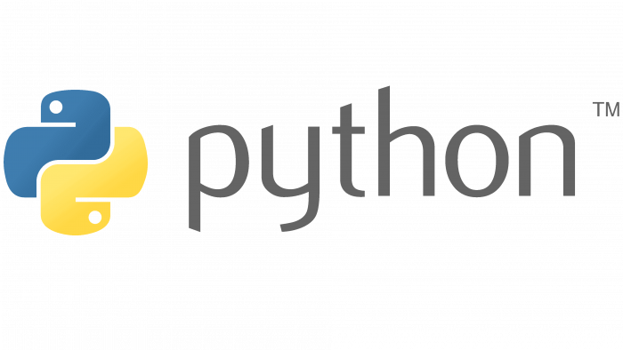

Nikitha Junuthula
Software Development Engineer
I build reliable, complex, and scalable software systems.
Hello! I am Nikitha Junuthula, a passionate Software Engineer with over three years of experience in full stack development and a Master's degree in Software Engineering from @ the Arizona State University, Tempe. Currently, I am working as an SDE II @ FedEx - where I specialize in building scalable and efficient software solutions.
I specialize in Java, Spring Boot, Angular, and Python, and I am passionate about developing end-to-end solutions that address real-world challenges. My focus lies in product development and systems engineering, where I excel at transforming complex problems into streamlined, innovative solutions. With a strong problem-solving mindset and a dedication to impactful design, I aim to create systems that not only meet technical requirements but also drive tangible, positive outcomes for users.
When I'm not on my computer, I love exploring my creative side through painting, reading poetry. I also enjoy traveling, always on the lookout for the new experiences.
EXPERIENCE
Check out my resume here!SKILLS
Backend
.png)



Frontend


Developer Tools


PROJECTS
COURSE WORK
Built with by Nikitha Junuthula